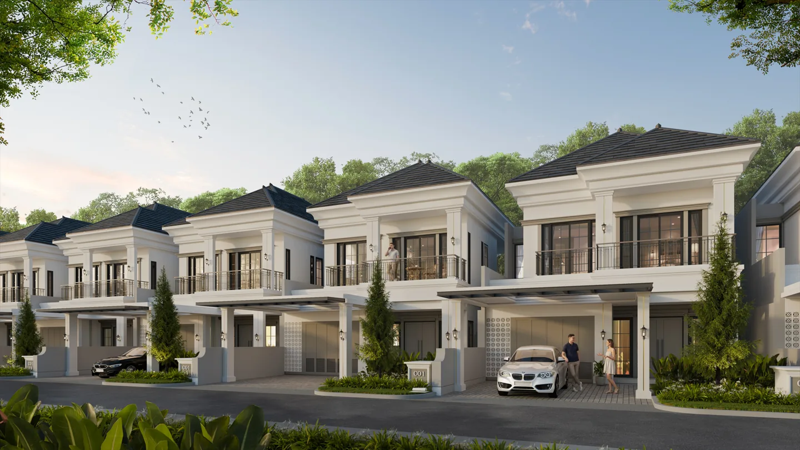

Cluster Lorraine
Ruang untuk
keseharian Anda.
Kenali Type A Standard 10 × 20 dan Type A Corner 10 × 23. Keduanya menawarkan dua lantai dan akses langsung ke halaman belakang.

Cluster Lorraine
Kenali Type A Standard 10 × 20 dan Type A Corner 10 × 23. Keduanya menawarkan dua lantai dan akses langsung ke halaman belakang.